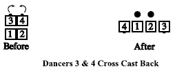

From a couple facing out of a 2x2 formation: Starting in tandem couples, the lead dancers always do the call; elsewhere, the dancers must be designated. The designated dancers Trail Off and step forward to stand beside the other dancers. The others do not move. This call cannot be fractionalized.

© Copyright 1983, 1986-1988, 1995-2017 Bill Davis, John Sybalsky and CALLERLAB Inc., The International Association of Square Dance Callers. Permission to reprint, republish, and create derivative works without royalty is hereby granted, provided this notice appears. Publication on the Internet of derivative works without royalty is hereby granted provided this notice appears. Permission to quote parts or all of this document without royalty is hereby granted, provided this notice is included. Information contained herein shall not be changed nor revised in any derivation or publication.